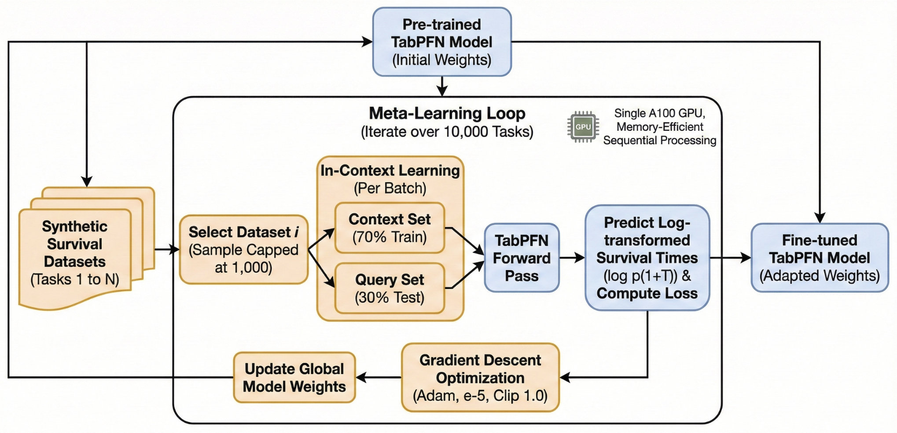
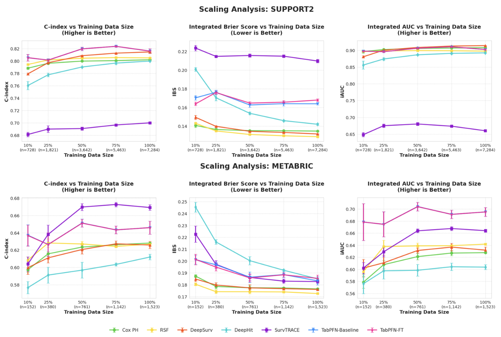

Deep Learning
Attention-Based Survival Analysis
Project Description
Predicting time-to-event outcomes is a fundamental problem in healthcare, yet survival analysis remains challenging in practice due to limited sample sizes, heterogeneous covariates, and censoring. While attention-based Transformers have shown strong generalization on small tabular datasets, their effectiveness for survival prediction without task-specific training is not well understood. We evaluate TabPFN, a general-purpose pre-trained transformer for tabular data, on two clinical benchmarks, METABRIC and SUPPORT2, comparing its zero-shot performance against classical, ensemble, deep learning, and transformer-based survival models. Zero-shot TabPFN consistently outperforms traditional and deep survival baselines and achieves performance competitive with specialized survival Transformers, particularly in low-data regimes. Fine-tuning TabPFN on a large collection of synthetic survival datasets yields modest gains in probabilistic accuracy, suggesting that survival-aware adaptation is beneficial but limited. Overall, our results highlight the promise of general-purpose transformer priors for data-efficient survival modeling and motivate future work on survival-specific pretraining.

Results
We evaluate the pre-trained TabPFN (Baseline) and our fine-tuned variant (TabPFN-FT) against the five baselines. We conduct a scaling analysis by training all models on increasing fractions of the training data (10%, 25%, 50%, 75%, and 100%) for both METABRIC and SUPPORT2.
Performance on METABRIC and SUPPORT2:
- Performance on METABRIC: The baseline TabPFN exhibits strong in-context learning, achieving discriminative performance competitive with specialized deep survival models without task-specific training. Across all data splits, the C-index and iAUC curves for the baseline (blue) and TabPFN-FT (pink) largely overlap, indicating similar ranking performance and only marginal discriminative gains from fine-tuning. In contrast, fine-tuning improves probabilistic calibration in low-data settings: at the 25% split (n ≈ 380), TabPFN-FT yields a noticeable reduction in Integrated Brier Score, suggesting more accurate probability estimates when data are scarce.
- Performance on SUPPORT2 On SUPPORT2, TabPFN-FT performs similarly to the baseline across most metrics and training sizes, underscoring the strength and robustness of the pre-trained priors and suggesting that synthetic fine-tuning does not consistently yield additional gains. Both TabPFN variants remain competitive with established baselines such as DeepSurv and Random Survival Forests throughout the scaling range. Notably, fine-tuning provides a clear benefit in specific low-data conditions: at the 10% split (n = 728), TabPFN-FT improves probabilistic accuracy, reducing the Integrated Brier Score from ≈ 0.171 (Baseline) to ≈ 0.165.

Overall, these results indicate that survival-aware fine-tuning can outperform the baseline TabPFN in certain regimes—particularly for probabilistic calibration in low-data set- tings—but that the performance boost is not consistent across datasets or sample sizes, with both variants generally exhibiting similar performance.